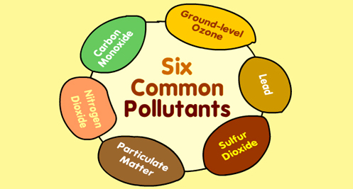

What are the common air pollutants around?  Carbon Monoxide (CO) Pollutants facts Fuel combustion from vehicles and engines. Pollutants facts Reduces the amount of oxygen reaching the body's organs and tissues; aggravates heart disease, resulting in chest pain and other symptoms. Ground-level Ozone (O3) Pollutants facts Secondary pollutant formed by chemical reaction of volatile organic compounds (VOCs) and NOx in the presence of sunlight. Pollutants facts Decreases lung function and causes respiratory symptoms, such as coughing and shortness of breath, and also makes asthma and other lung diseases get worse. Lead (Pb) Pollutants facts Smelters (metal refineries) and other metal industries; combustion of leaded gasoline in piston engine aircraft; waste incinerators (waste burners), and battery manufacturing. Pollutants facts Damages the developing nervous system, resulting in IQ loss and impacts on learning, memory, and behavior in children. Cardiovascular and renal effects in adults and early effects related to anaemia. Nitrogen Dioxide (NO2) Pollutants facts Fuel combustion (electric utilities, big industrial boilers, vehicles) and wood burning. Pollutants facts Worsens lung diseases leading to respiratory symptoms, increased susceptibility to respiratory infection. Particulate Matter (PM) Pollutants facts This is formed through chemical reactions, fuel combustion (e.g., burning coal, wood, diesel), industrial processes, farming (plowing, field burning), and unpaved roads or during road constructions. Pollutants facts Short-term exposures can worsen heart or lung diseases and cause respiratory problems. Long-term exposures can cause heart or lung disease and sometimes premature deaths. Sulfur Dioxide (SO2) Pollutants facts SO2 comes from fuel combustion (especially high-sulfur coal); electric utilities and industrial processes as well as natural occurences like volcanoes. Pollutants facts Aggravates asthma and makes breathing difficult. It also contributes to particle formation with associated health effects. What are the effects of air pollution? Below are a few key effects of air pollution. The last page on FactSheet has some specific air pollution incidents that are worth checking out. Acidification: Chemical reactions involving air pollutants can create acidic compounds which can cause harm to vegetation and buildings. Sometimes, when an air pollutant, such as sulfuric acid combines with the water droplets that make up clouds, the water droplets become acidic, forming acid rain. When acid rain falls over an area, it can kill trees and harm animals, fish, and other wildlife. Acid rain destroys the leaves of plants. When acid rain infiltrates into soils, it changes the chemistry of the soil making it unfit for many living things that depend on the soil as a habitat or for nutrition. Acid rain also changes the chemistry of the lakes and streams that the rainwater flows into, harming fish and other aquatic life. Eutrophication: Rain can carry and deposit the Nitrogen in some pollutants on rivers and soils. This will adversely affect the nutrients in the soil and water bodies. This can result in algae growth in lakes and water bodies, and make conditions for other living organism harmful. Ground-level ozone: Chemical reactions involving air pollutants create a poisonous gas ozone (O3). Gas Ozone can affect people's health and can damage vegetation types and some animal life too. Particulate matter: Air pollutants can be in the form of particulate matter which can be very harmful to our health. The level of effect usually depends on the length of time of exposure, as well the kind and concentration of chemicals and particles exposed to. Short-term effects include irritation to the eyes, nose and throat, and upper respiratory infections such as bronchitis and pneumonia. Others include headaches, nausea, and allergic reactions. Short-term air pollution can aggravate the medical conditions of individuals with asthma and emphysema. Long-term health effects can include chronic respiratory disease, lung cancer, heart disease, and even damage to the brain, nerves, liver, or kidneys. Continual exposure to air pollution affects the lungs of growing children and may aggravate or complicate medical conditions in the elderly. What is light pollution? Light pollution is the excessive and prolonged use of artificial lights, in a way that results in brightening of night skies, disrupting natural cycles and activities of wildlife, health probelms in humans, as well as preventing humans from observing stars and other planets. In other definitions, it does not only have to do with the sky, but anywhere that artificial lights are used, where they are not intended to. Other terms often used for light pollution are 'photopollution' and 'luminous pollution'. Note that this is not only a city center problem. There is also light pollution when you use too much light in your compound that affects the comfort and health of your neigbours. This could be your outdoor light's intrusion into other people's bedrooms. This can be called nuisance. Too much light indoors also is classified as indoor light pollution if it is wasteful and it has effect on the health of people living in that room. What is Noise Pollution? Sound is essential to our daily lives, but noise is not. Noise is generally used as an unwanted sound, or sound which produces unpleasant effects and discomfort on the ears. Sound becomes unwanted when it either interferes with normal activities such as sleeping, conversation, or disrupts or diminishes one's quality of life. Not all noise can be called noise pollution. If it does not happen reqularly, it may be termed as 'Nuisance' Scientists also believe that its not only humans who are affected. For example, water animals are subjected to noise by submarines and big ships on the ocean, and chain-saw operations by timber companies also create extreme noise to animals in the forests. Generally, noise is produced by household gadgets, big trucks, vehicles and motorbikes on the road, jet planes and helicopters hovering over cites, loud speakers etc. Noise (or sound) is measured in the units of decibels and is denoted by the dB. Noise which is more than 115 dB is tolerant. The industrial limit of sound in the industries must be 75 dB according to the World Health Organization. Noise is considered as environmental pollution, even though it is thought to have less damage on humans than water, air or land pollution. But people who are affected by severe noise pollution know that it is a massive issue that needs attention. |